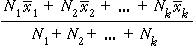

A simple random sample of individuals from some population is conceptually the easiest sampling scheme. However more accurate estimates of population characteristics can often be obtained with different sampling schemes.
Groups within a population
If the individuals in the population can be split into different groups (called strata in sampling terminology), it is often better to take a simple random sample within each separate group than to sample randomly from the whole population. This is called a stratified random sample.
In stratified random samples, random samples are usually taken from the different strata in proportion to the number of population values in the strata. For example, if a population of 1,000 values is split into three strata of N1 = 500, N2 = 300 and N3 = 200 values and a sample of n = 50 is to be taken, then samples of n1 = 25, n2 = 15 and n3 = 10 would be taken from the three strata — i.e. 1/20 of the population within each stratum.
Sampling from male and female students
For example, a simple random sample of 40 students from a class of 200 males and 200 females might (by chance) include 25 males and 15 females.
A stratified random sample would randomly select 20 males and 20 females, ensuring that the sex-ratio in the sample matched that in the population.
The benefits from stratified random sampling are greatest if the measurement being sampled is different in the different strata. For example, we might want to estimate the mean summer income of the students. If male students tend to have higher incomes than female students, a stratified random sample based on gender will be more accurate than a simple random sample.
Groups with different variability (advanced, not examined)
The size of the sample taken from each stratum is often proportional to the number of individuals in the stratum. However this proportionality is not essential and greater accuracy may be obtained by selecting larger samples from strata with greater variability.
Mean profits of companies
An extreme example of disproportionate sample sizes occurs when using sampling to estimate the mean profits of companies. If a list of 'large' companies is available, it is often best to record information from all of the large companies but only sample a small fraction of the smaller companies.
If sample size is not proportional to stratum size, the overall sample mean is
no longer appropriate for estimating the overall population mean. If there are k strata of size N1, N2, ..., Nk,
and samples of size n1, n2, ..., nk
are taken from the strata, giving means  1,
1,  2, ...,
2, ...,  k
, then the population mean should be estimated by
k
, then the population mean should be estimated by
